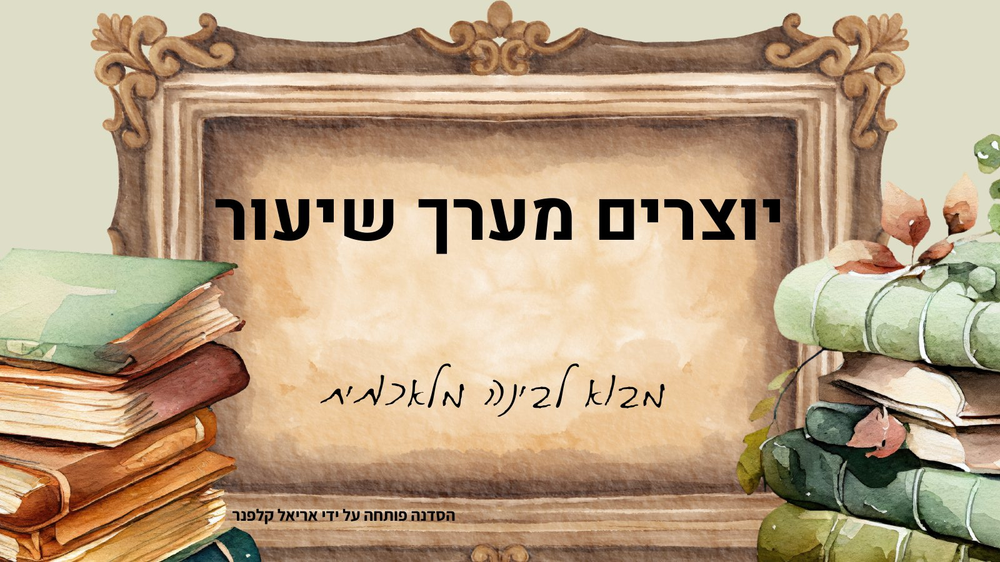
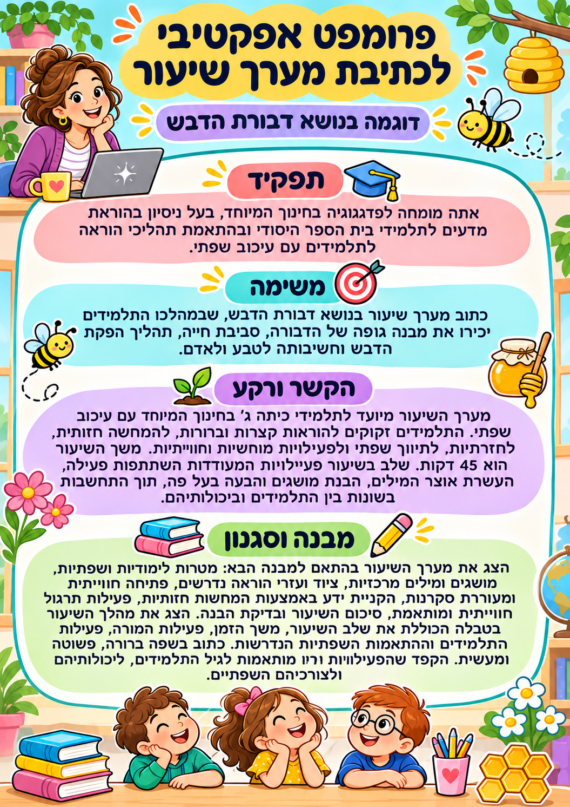
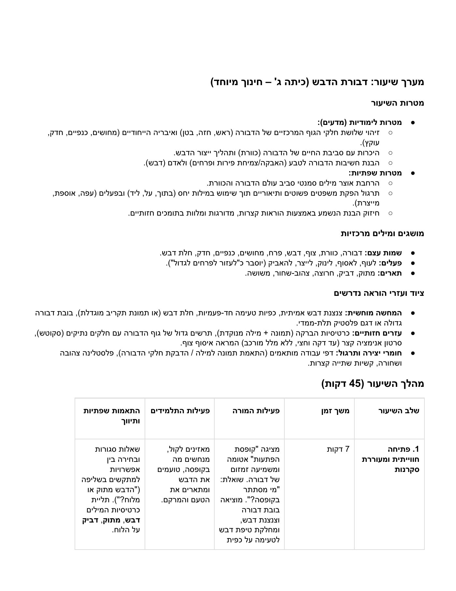
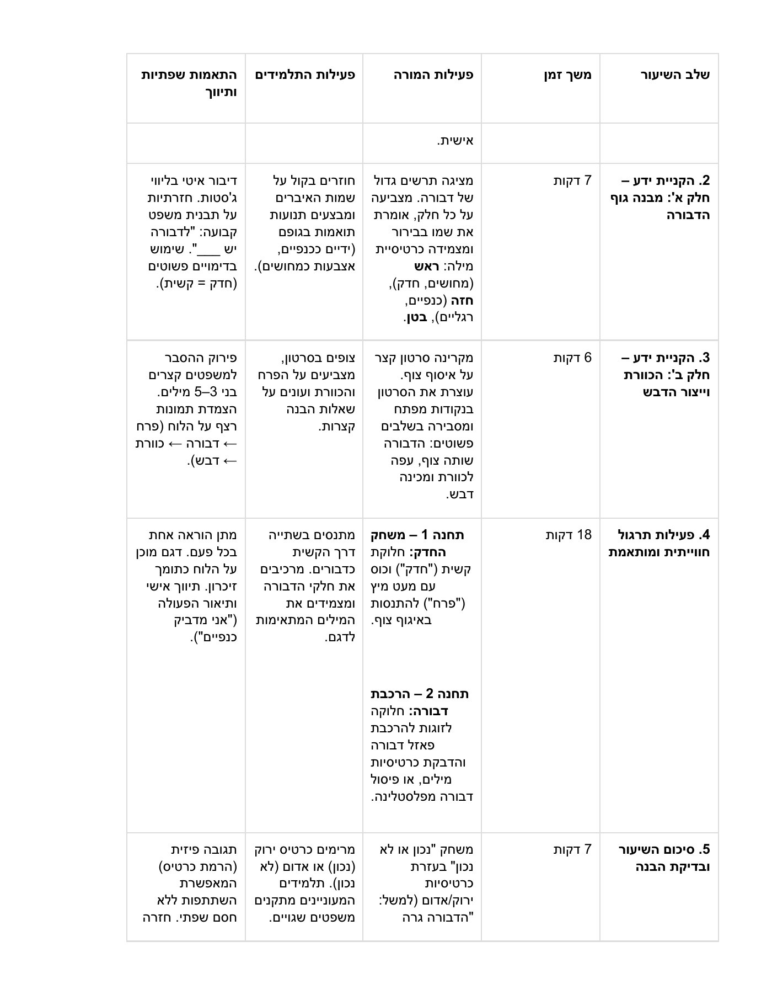
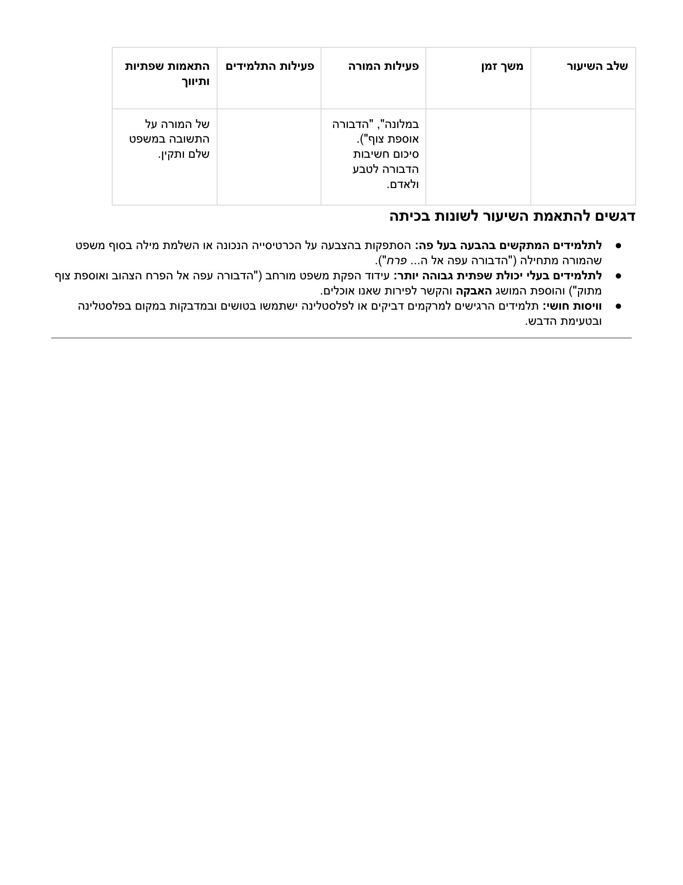

תפקיד
אתה מומחה לפדגוגיה בחינוך המיוחד, בעל ניסיון בהוראת מדעים לתלמידי בית הספר היסודי ובהתאמת תהליכי הוראה לתלמידים עם עיכוב שפתי.
נכתוב פרומפט עם ארבעת המרכיבים, נשלח אותו לבינה המלאכותית ונקבל מערך שיעור מוכן.
עוברים בין השקפים בחצים או במקשי החצים במקלדת.

פרומפט אפקטיבי לכתיבת מערך שיעור, לפי ארבעת המרכיבים שלמדנו.

אפשר להעתיק אותו, להדביק בכלי הבינה ולשנות את הנושא והכיתה לפי הצורך.
אתה מומחה לפדגוגיה בחינוך המיוחד, בעל ניסיון בהוראת מדעים לתלמידי בית הספר היסודי ובהתאמת תהליכי הוראה לתלמידים עם עיכוב שפתי.
כתוב מערך שיעור בנושא דבורת הדבש, שבמהלכו התלמידים יכירו את מבנה גופה של הדבורה, סביבת חייה, תהליך הפקת הדבש וחשיבותה לטבע ולאדם.
מערך השיעור מיועד לתלמידי כיתה ג׳ בחינוך המיוחד עם עיכוב שפתי. התלמידים זקוקים להוראות קצרות וברורות, להמחשה חזותית, לחזרתיות, לתיווך שפתי ולפעילויות מוחשיות וחווייתיות. משך השיעור הוא 45 דקות. שלב בשיעור פעילויות המעודדות השתתפות, העשרת אוצר המילים, הבנת מושגים והבעה בעל פה, תוך התחשבות בשונות בין התלמידים וביכולותיהם.
הצג את מערך השיעור בהתאם למבנה הבא: מטרות לימודיות ושפתיות, מושגים ומילים מרכזיות, ציוד ועזרי הוראה נדרשים, פתיחה חווייתית ומעוררת סקרנות, הקניית ידע באמצעות המחשות חזותיות, פעילות תרגול חווייתית ומותאמת, סיכום השיעור ובדיקת הבנה. הצג את מהלך השיעור בטבלה הכוללת את שלב השיעור, משך הזמן, פעילות המורה, פעילות התלמידים וההתאמות השפתיות הנדרשות. כתוב בשפה ברורה, פשוטה ומעשית. הקפד שהפעילויות ורמתן מתאימות לגיל התלמידים, ליכולותיהם ולצרכיהם השפתיים.
כך נראה מערך השיעור שהתקבל מהפרומפט שלמעלה.



לקריאה נוחה יותר, או להדפסה, פתחו את ה-PDF.
לא שוכחים: הבינה המלאכותית יכולה לטעות. לפני שמשתמשים במערך בכיתה, קוראים אותו, בודקים את התוכן ומתאימים אותו לתלמידים.
נפיק באמצעות פרומפט דף מידע מקצועי למורה, על בסיס מערך השיעור.